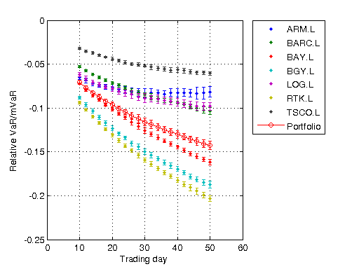

Distributed Marginal Value-at-Risk Simulation
This demo uses the Parallel Computing Toolbox™ to perform a Monte Carlo simulation of a number of stocks in a portfolio. At a given confidence level, we predict the value at risk (VaR) of the portfolio as well as the marginal value at risk (mVaR) of each of the stocks in the portfolio. We also provide confidence intervals for our estimates.
For details about the computations, view the code for pctdemo_setup_mvar.
Prerequisites:
Related demos:
Contents
Analyze the Sequential Problem
First, we look at how the computations in the sequential demo fit into the model introduced in the Dividing MATLAB Computations into Tasks demo. The main computations in the sequential demo consist of calling pctdemo_task_mvar to perform repeated simulations. Each simulation takes only a few seconds, so we have each task perform many such simulations. Because the function pctdemo_task_mvar can already perform many simulations in a single function call, we can use it directly as our task function.
Load the Demo Settings and the Data
The demo uses the default configuration when identifying the scheduler to use. The configurations documentation explains how to create new configurations and how to change the default configuration. See Customizing the Settings for the Demos in the Parallel Computing Toolbox for instructions on how to change the demo difficulty level or the number of tasks created.
[difficulty, scheduler, numTasks] = pctdemo_helper_getDefaults();
We obtain the performance of the stocks, their weights in our portfolio, and other input data from pctdemo_setup_mvar. The number of repetitions, numTimes, is determined by the difficulty parameter. You can view the code for pctdemo_setup_mvar for full details.
[fig, numSims, numTimes, stock, names, weights, time, confLevel] = ...
pctdemo_setup_mvar(difficulty);
Let's look at the confidence level at which we are calculating the VaR and mVaR.
fprintf('Calculating VaR and mVaR at the %3.1f%% confidence level.\n', ... confLevel); startTime = clock;
Calculating VaR and mVaR at the 95.0% confidence level.
Divide the Work into Smaller Tasks
We divide the numTimes repetitions of the simulations among the numTasks tasks.
[splitTimes, numTasks] = pctdemo_helper_split_scalar(numTimes, numTasks); fprintf(['This demo will submit a job with %d task(s) ' ... 'to the scheduler.\n'], numTasks);
This demo will submit a job with 4 task(s) to the scheduler.
Create and Submit the Job
We create the job and the tasks in the job. We let the task function in task i perform splitTimes(i) repetitions of the simulations. You can view the code for pctdemo_task_mvar for full details.
job = createJob(scheduler); for i = 1:numTasks createTask(job, @pctdemo_task_mvar, 2, ... {splitTimes(i), stock, weights, time, numSims, confLevel}); end
We can now submit the job and wait for it to finish.
submit(job);
waitForState(job, 'finished');
Retrieve the Results
Let us obtain the job results, verify that all the tasks finished successfully, and then destroy the job. We throw an error if we could not obtain any results, but display a warning if we got only some of the results.
jobResults = getAllOutputArguments(job); if isempty(jobResults) taskErrorMsgs = pctdemo_helper_getUniqueErrors(job); destroy(job); error('distcomp:demo:EmptyJobOutput', ... ['Could not obtain any job results. The following error(s) ' ... 'occurred \nduring task execution:\n\n%s'], ... taskErrorMsgs); end
We collect the task results and verify that all of them finished successfully.
VaR = cat(1, jobResults{:, 1});
mVaR = cat(1, jobResults{:, 2});
numOk = size(VaR, 1);
if ~(numOk == numTimes)
taskErrorMsgs = pctdemo_helper_getUniqueErrors(job);
warning('distcomp:demo:IncompleteJobResults', ...
['Some tasks did not finish. Results were obtained for ' ...
' %d out of %d \nsimulation runs. The following ' ...
'error(s) occurred during task execution:\n\n%s'], ...
numOk, numTimes, taskErrorMsgs);
end
We have now finished all the verifications, so we can destroy the job.
destroy(job);
Measure the Elapsed Time
The time used for the distributed computations should be compared against the time it takes to perform the same set of calculations in the Sequential Marginal Value-at-Risk Simulation demo. The elapsed time varies with the underlying hardware and network infrastructure.
elapsedTime = etime(clock, startTime);
fprintf('Elapsed time is %2.1f seconds\n', elapsedTime);
Elapsed time is 13.3 seconds
Plot the Results
We use pctdemo_plot_mvar to create a graph of the value at risk of our portfolio at the given confidence level. The graph also shows the marginal value at risk of the individual stocks in our portfolio at that same confidence level. You can view the code for pctdemo_plot_mvar for full details.
pctdemo_plot_mvar(fig, VaR, mVaR, time, names);